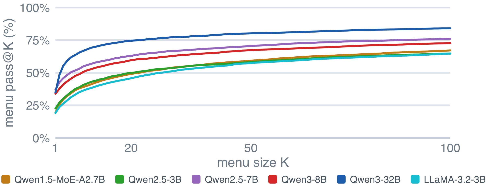
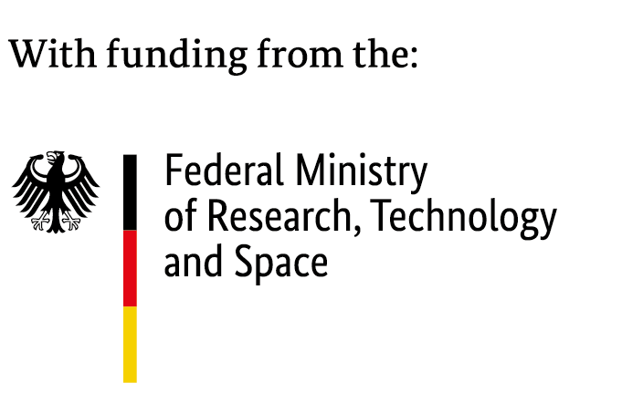

Paper under review
(Poster presented at NEAT and Bernstein Conference 2026)
TL;DR: We reproduce and extend PoLar [ICML 2026 Oral], which lets LLMs dynamically skip or repeat transformer layers per input instead of running their fixed forward pass. We confirm its core findings across 6 models and 3 search seeds. For its main claim, the learned router’s gain, we find what drives it: under their setup the router repairs the format of the model’s answers, which a single fixed program does better, and how much it gains depends strongly on the search seed; in our setup its top prediction collapses to the standard pass. We connect programs-of-layers to thalamo-cortical coordination in the brain, although a router that plays that role remains to be found.
Figure 1. A program-of-layers (PoLar), predicted by a lightweight router, executes a schedule of skip, keep, and repeat operations over frozen, pretrained transformer layers (left). We read this coordinating role as functionally analogous to the thalamus routing computation across cortical areas (right). A transformer’s layer order is fixed only by training, not by necessity: a model trained to run its layers in order can nonetheless be usefully executed out of that order at inference time, a flexibility the brain already has by default.
Inference in large language models (LLMs) is conventionally a fixed-depth, fixed-order forward pass through every layer, regardless of how difficult the input is. The human brain does not work this way. Using the thalamus as a central hub, it routes information flexibly to all regions of the cortex according to demand. Li et al. (2026) recently showed, with a system they call program-of-layers (PoLar), that transformers can be given an analogous flexibility if their layers are treated as a library of functions rather than a fixed sequence. Performance improves over the standard forward pass when each input is dynamically routed through an adaptive sequence of skipped or repeated contiguous layer blocks. Reconstructing PoLar’s diagnostic Monte Carlo Tree Search (MCTS) in more detail across 6 models, we reproduce several of its findings: skipping outperforms the standard pass, repeating outperforms skipping, and combining both outperforms either alone. Shorter programs suffice for easier questions, while harder questions require more layer repeats. For their main claim, the learned router’s gain, we find what drives it. Under their setup, the router gains by repairing the format of the model’s answers, which a single fixed program, selected on validation questions, does better. In our setup, with a prompt that already fixes the format, a larger data split and our search, its top prediction collapses to the standard pass on every model, although its top-5 programs together still gain. Beyond reproduction, we find in our setup, where the format no longer fails, that a small fixed menu of programs solves far more questions than the standard pass, and that programs which correct errors are brittle: undoing a single edit typically breaks the correction. Connecting this to the brain’s routing mechanisms, PoLar mirrors principles of thalamo-cortical coordination between cortical-area-like transformer layers, although a working thalamus analogue, a router that picks a better program per input, remains to be found.
Three results stand out. Under Li et al.’s setup, the router’s gain is a format repair. In our setup, the router collapses to the standard pass. And programs that solve far more questions do exist, but a router that picks a better one per input remains to be found.
Their search, their prompt, their split with 4 models and 3 search seeds.
of Qwen3-8B’s answers under their prompt are the literal placeholder \boxed{ANSWER}; Qwen2.5-3B runs out of tokens before writing a box. All router gains come from these questions.
points for one program on every input vs. the router (Qwen2.5-3B, DM-1). It gains more wherever the router gains.
For Qwen2.5-3B on DM-1, with instead of . With the format fixed, neither router nor fixed program gains on any model.
points on Qwen2.5-3B DM-2 across search seeds. Their code starts every question from the same seed, so a few edits dominate the training labels.
| Model, level | Prompt | Standard pass (%) | Router | Fixed program |
|---|---|---|---|---|
| Qwen2.5-3B, DM-2 | 0.7 | +7.2 / +13.5 / +0.7 | +23.1 / +29.9 / +27.6 | |
| Qwen3-8B, DM-1 | 42.8 | +1.4 / +1.6 / −6.9 | +9.4 / +6.7 / +8.7 | |
| Qwen2.5-3B, DM-2 | 36.9 | −3.7 / −3.7 / −3.2 | −3.2 / −4.4 / −3.4 | |
| Qwen3-8B, DM-1 | 65.8 | −1.1 / −1.9 / −15.9 | −4.4 / −4.6 / −1.6 |
We cannot explain all of their reported gains: on LLaMA-3.2-3B and Qwen1.5-MoE-A2.7B, neither our router nor our prompts reach their numbers, and on Qwen3-8B DM-2 to DM-5 the router stays below them (DM-2: at most +1.3 against their +12.1). We would love to understand this gap, but Li et al.’s training programs and router checkpoints are still not released, so we cannot check it.
A prompt that already fixes the format, a larger data split and our search.
model, level and seed cells, also with their released training code. We were not able to train an uncollapsed router that improves on the pretrained LLM by rerouting its layers: no anti-collapse lever, ours or in their code, breaks the collapse without a real accuracy cost.
of the per-layer labels are keep, although identity is only 2–7% of the training programs. The decoded average of these labels is identity; with their search, one dominant edit. The search decides whether it collapses, the prompt whether it then gains.
distinct programs across all its top-5 sets, out of up to 500. Together they still gain, but not by choosing per input: the gain comes from beam-search diversity, and the router never ranks a correct non-identity program first.
as many questions solved by the 100 most successful programs of a level as by identity alone (72% vs. 28%, mean over 6 models and 5 levels; 65–84% per model).
more for a wrong answer that is numerically or structurally close to the ground truth than for an unrelated one, in every model. This suggests that programs mostly adjust an answer the model has nearly reached, rather than add new reasoning.
of the edits in programs are essential: undoing one breaks the program.
accuracy of MMLU-Pro programs once the answer options are reshuffled, near random guessing: they follow the position of the correct option, not its content. A gain should pass such a robustness test before it counts as a capability gain.

F5 Menu pass@K (the share of questions that at least one of the K programs solves) against menu size K, pooled over difficulty.
| Finding | Description | Status |
|---|---|---|
| F0 | Reproducing Li et al.’s baseline numbersWith their prompt and without a chat template, the standard pass on our reconstruction of their test set matches their published numbers for LLaMA-3.2-3B and, on some levels, for Qwen1.5-MoE-A2.7B and Qwen3-8B, but on no level for Qwen2.5-3B. With the chat template their evaluation code applies, all three Qwen models fall below their numbers in every cell, so we run their split without it. | ⚡ |
| F1 | Skip & Repeat combined beats either aloneOn every model and DART-Math level, accuracy rises from the standard pass to skip only, repeat only, and skip and repeat combined. This is the same ordering Li et al. report, with repeat the stronger of the two mechanisms on its own. | ✓ |
| F2 | Occam’s razor: most samples have shorter valid programs than a standard forward passOn 5 of our 6 models, most solved questions have a program shorter than the standard forward pass (50.5–91% per difficulty). On Qwen1.5-MoE-A2.7B, fewer than half do (39–45%). | ✓ |
| F3 | Harder inputs need larger programs (test-time scaling via recurrence)On every model, the share of questions with at least one valid program rises monotonically as more recurrence steps are allowed. The share of solvable questions that need recurrence rises from the easiest to the hardest level on 5 of 6 models, and the share that needs skipping on 4 of them. The exception on both is LLaMA-3.2-3B. | ✓ |
| F4 | Valid programs concentrate on short, mostly single-recurrence segments (short only on the PoLar split, with their search)Li et al. report that 57.7% of segments in valid programs touch a single layer. With our search on our split, 5 of our 6 models have fewer (21–38%); with their search on the PoLar split, all 4 models we ran have more (70–81%), likely because their search allows multi-layer moves only at the root. That segments are repeated at most once holds on all 6 models for the shortest valid program, in 74–86% of solved questions. | ⚡ |
| F5 | A small menu of programs generalizes across many questionsAt K=100, the menu solves on average 72% of the questions, against 28% for identity. Apart from Qwen3-32B, whose standard pass often starts to reason and hits the 50-token limit before writing a box, no program with a single edit solves clearly more questions than identity: each fixes some questions but breaks about as many others. Since each fixes different questions, a menu of them together covers far more. | ★ |
| F6 | A wrong answer close to the ground truth is rescued ~1.5× more often than a distant oneAn LLM-assisted classifier rated how close each wrong answer is to the ground truth, for every DART-Math question identity answers wrong, across all 6 models and 5 levels. A wrong answer that is numerically or structurally close is rescued about 1.5× as often as an unrelated one, in every model. | ★ |
| F7 | Programs are fragile: most edits are essential, and fragility depends on model, not difficultyWe revert one edited segment of a rescuing program at a time back to keep and check whether the reward survives. The break rate is roughly flat across levels in five of six models and ranges from 44.5% (Qwen3-32B) to 66.8% (Qwen1.5-MoE-A2.7B). On 5 of 6 models, most edits inside a working program are individually essential. | ★ |
| F8 | Router gives a pass@1 gain over Base (on the PoLar split and also OOD only as format repair, and a single fixed program does better)On the PoLar split, the router gains only where breaks the output format (Qwen3-8B, Qwen2.5-3B), how much depends on the search seed, and a single fixed program gains more in every case. With , neither gains on any model. In our setup, the router’s top-1 decode is the literal identity program on every model, level and training-data treatment tested, also with Li et al.’s released router-training code. | ⚡ (★) |
| F9 | Router’s pass@5 gain comes from a small, fixed menu, mainly input-independentThe pass@5 gain does replicate in our setup, and there it is not a format repair: it comes from beam-search diversity. The router never places a correct non-identity program at rank 1, only somewhere in its top 5, and these top-5 predictions collapse to a fixed menu of few programs. | ★ |
| F10 | MMLU-Pro programs and router overfit to answer position, not contentOn Qwen3-8B, with answers scored by the logits of the option letters, we reshuffle which option sits behind which letter. Rescuing accuracy falls below identity’s own, while identity itself is close to shuffle-invariant. A dedicated MMLU-Pro router collapses to identity at pass@1 too, and its pass@5 gain is position overfitting: three of its five fixed programs answer a near-constant letter. Gains like this should be checked with robustness tests, such as reshuffling the answer options, before they are read as capability gains, especially if programs are deployed. | ★ |
Every program our MCTS and Li et al.’s MCTS evaluated on the same 15 example
questions. Pick a model, then switch under Run or Seed: the question stays, so you can
compare directly. Trees show skip, keep, and
repeat edits, colored by correctness, with a full search-trajectory replay.
Their search reaches much deeper programs (seed 42, median deepest program: 9 vs. 3 edits). To see the format
repair, pick Qwen3-8B, Their search, Question 2: the identity answer is the literal
placeholder \boxed{ANSWER}, while green nodes write a real answer. Qwen2.5-3B fails differently: under Their search,
its identity answers run out of tokens before writing a box. To see the seed dependence, stay under Their search and switch the seed: within a
seed all questions start with the same edits, and these change with the seed. Qwen2.5-7B and Qwen3-32B have only our search, as Li et al. did not study them.
The Hugging Face dataset holds every program our searches evaluated (56.6M, 4.6M of them solving their question), the 53.2M generated answers behind them, the trained routers and their test results, the best fixed program per level, and the menu cross-execution.
The dataset holds no question text or reference answers, only ids: the MATH half of the question pool traces back to a dataset delisted from Hugging Face amid a disputed ownership claim, so we do not re-host it. The code rebuilds the questions locally from the public pool.
@article{westerhoff2026repolar,
title = {Programs-of-Layers in LLMs through the Lens of Cortical Areas},
author = {Westerhoff, Justus and Olbrich, Stephan and Oraby, Hatem and
Senn, Walter and Larkum, Matthew Evan and Gers, Felix Alexander},
journal = {arXiv preprint arXiv:2609.31360},
year = {2026}
}
Our work is funded by the Federal Ministry of Research, Technology and Space under grant number 01GQ2505A and by the Deutsche Forschungsgemeinschaft (DFG, German Research Foundation) – FIP-12 – Project-ID 528483508. Responsibility for the content of this publication lies with the author.

This page’s template is inspired by the SCAM, SynthMT, and Dyslexify project pages.